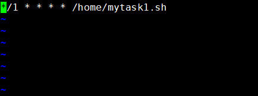
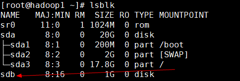

1 vi和vim的基本介绍
所有的 Linux 系统都会内建 vi 文本编辑器。
Vim 具有程序编辑的能力，可以看做是Vi的增强版本，可以主动的以字体颜色辨别语法的正确性，方便程序设计。代码补完、编译及错误跳转等方便编程的功能特别丰富，在程序员中被广泛使用。
我们只需要掌握它的基本使用即可。
1.1 LINUX操作系统VIM的安装和配置
1.1.1 VIM的安装
在命令行敲入“vi”后按”tab”键，可以看到目前系统中只安装了vi和vim.tiny。
vim是从VI发展而来的一个文本编辑器，功能更强大。而vim.tiny是vim的精简版，所以，安装vim势在必行。
centos系统：
普通用户下输入命令：yum -y install vim*
ubuntu系统：
普通用户下输入命令：sudo apt-get install vim-gtk
之后不需要任何操作，等待安装完成。安装完成之后，在命令行敲入vi，按“tab”键。可以看到，已经有vim命令的存在。安装成功。
1.1.2 VIM的配置
set nu // 在左侧行号
set tabstop //tab 长度设置为 4
set nobackup //覆盖文件时不备份
set cursorline //突出显示当前行
set ruler //在右下角显示光标位置的状态行
set autoindent //自动缩进
2 vim和vi的快捷键的使用
1) 拷贝当前行 yy , 拷贝当前行向下的5行 5yy，并粘贴 p。【快捷键在正常模式下使用】
2) 删除当前行 dd , 删除当前行向下的5行 5dd
3) 在文件中查找某个单词 [命令模式下 /关键字 ， 回车 查找 , 输入 n 就是查找下一个]
4) 设置文件的行号，取消文件的行号.[命令行下 : set nu 和 :set nonu]
5) 编辑 /etc/profile 文件，使用快捷键到底文档的最末行[G]和最首行[gg] 【正常模式下】
6) 在一个文件中输入 “hello” ,然后又撤销这个动作 u 【正常模式下】
7) 编辑 /etc/profile 文件，并将光标移动到 20行 shift+g
3 开机、重启和用户登录注销
3.1 关机&重启命令
shutdown -h now [立刻关机]
shutdown -h 1 “1分钟，关机.” [1分钟后，关机]
shutdown -r now [立刻重启]
shutdown -r 2 “2分钟后，重启”
halt 【立刻关机】
reboot 【立刻重启】
在重启和关机前，通常需要先执行
sync [把内存的数据，写入磁盘]
注意细节：
不管是重启系统还是关闭系统，首先要运行sync命令，把内存中的数据写到磁盘中
3.2 用户的登录和注销
1) 登录时尽量少用root帐号登录，因为它是系统管理员，最大的权限，避免操作失误。可以利用普通用户登录，登录后再用”su - 用户名’命令来切换成系统管理员身份.
2) 在提示符下输入 logout 即可注销用户【不同的shell 可能不同(logout exit)】
3 logout 注销指令在图形运行级别(简单提一下：0-6**个级别**)无效，在 运行级别 3下有效.
4) 运行级别这个概念，后面给大家介绍
4 用户管理
4.1 基本介绍
Linux系统是一个多用户多任务的操作系统，任何一个要使用系统资源的用户，都必须首先向系统管理员申请一个账号，然后以这个账号的身份进入系统
4.2 添加用户
基本语法
useradd 用户名
案例演示
添加一个用户 xiaoming : useradd xiaoming
使用细节
1) 当创建用户成功后，会自动的创建和用户同名的家目录 【/home/xiaoming】
2) 也可以通过 useradd -d 指定目录 新的用户名jack，给新创建的用户指定家目录
4.3 指定/修改密码
4.3.1 基本语法
passwd 用户名 如果没有带用户名，则是给当前登录的用户修改密码
4.3.2 应用案例
给xiaoming 指定密码
passwd xiaoming 需要root用户或自身才能修改
4.4 删除用户
4.4.1 基本语法
userdel 用户名
4.4.2 应用案例
删除用户xiaoming，但是要保留家目录 userdel 用户名 userdel xiaoming
删除用户以及用户主目录 userdel –r xiaoming 【小心使用】
4.4.3 细节说明
是否保留家目录的讨论？ [一般保留]
查询用户信息指令
id 用户名
1) 当用户不存在时，返回无此用户
4.5 切换用户
4.5.1 介绍
在操作Linux中，如果当前用户的权限不够，可以通过 su - 指令，切换到高权限用户，比如root
4.5.2 基本语法
su – 切换用户名
4.5.3 细节说明
1) 从权限高的用户切换到权限低的用户，不需要输入密码，反之需要。
2) 当需要返回到原来用户时，使用exit指令
3) 如果 su – 没有带用户名，则默认切换到root用户
4.7 用户组
4.7.1 介绍
类似于角色，系统可以对有共性的多个用户进行统一的管理。
4.7.2 新增组
指令
groupadd 组名
4.7.3 案例演示 [增加 wudang] 武当
groupadd wudang
4.7.4 增加用户时直接加上组
指令(基本语法)
useradd –g 用户组 用户名
增加一个用户 zwj, 直接将他指定到 wudang useradd -g wudang zwj
4.7.5 删除组
指令(基本语法)
groupdel 组名
案例演示
这里有一个前提，就是这个组没有用户，才能删除。
4.7.6 修改用户的组
指令(基本语法)
usermod –g 新的组名 用户名
案例演示
创建一个shaolin组，让将zwj 用户修改到shaolin usermod -g shaolin zwj
4.8 用户和组的相关文件
4.8.1 /etc/passwd 文件
用户（user）的配置文件，记录用户的各种信息
每行的含义：用户名:口令:用户标识号:组标识号:注释性描述:主目录:登录Shell
4.8.2 /etc/shadow 文件
口令的配置文件
每行的含义：登录名:加密口令:最后一次修改时间:最小时间间隔:最大时间间隔:警告时间:不活动时间:失效时间:保留
4.8.3 /etc/group 文件
组(group)的配置文件，记录Linux包含的组的信息
每行含义：组名:口令:组标识号:组内用户列表
5 实用指令
5.1 指定运行级别
5.1.1 基本介绍
运行级别说明：
1) 0 ：关机
2) 1 ：单用户 [类似安全模式， 这个模式可以帮助找回root密码]
3) 2：多用户状态没有网络服务
4) 3：多用户状态有网络服务 [使用最多]
5) 4：系统未使用保留给用户
6) 5：图形界面 【】
7) 6：系统重启
常用运行级别是3和5 ，要修改默认的运行级别可改文件
如果指定运行级别
/etc/inittab的
id:5:initdefault:这一行中的数字
命令：init [012356] https协议
应用实例：
案例： 通过init 来切换不同的运行级别，比如动 5-3 ， 然后关机
init 5
init 3
init 0
5.2 指定运行级别
1）如何找回root密码
启动时->快速输入enter->输入e-> 进入到编辑界面-> 选择中间有kernel 项->
输入e(edit)-> 在该行的最后写入 1 [表示修改内核，临时生效]-> 输入enter->
输入b [boot]-> 进入到单用模式 【这里就可以做补救工作】
2) 我们的 运行级别，linux 运行后，直接进入到 命令行终端(3级别)
在/etc/inittab修改 id:5:initdefault:这一行中的数字为 id:3:initdefault:
5.3 帮助指令
5.3.1 man 获得帮助信息
基本语法
man 命令或配置文件
应用实例
案例：查看ls命令的帮助信息
man ls
5.3.2 help指令
基本语法
help 命令 （功能描述：获得shell内置命令的帮助信息）
应用实例
案例：查看cd命令的帮助信息
help cd
5.4 文件和目录相关的指令
5.4.1 pwd 指令
基本语法
pwd (功能描述：显示当前工作目录的绝对路径)
应用实例
案例：显示当前工作目录的绝对路径
演示：pwd
5.4.2 ls指令
基本语法
ls 选项 目录或是文件
常用选项
-a ：显示当前目录所有的文件和目录，包括隐藏的 (文件名以.开头就是隐藏)。
-l ：以列表的方式显示信息
-h : 显示文件大小时，以 k , m, G单位显示
应用实例
案例:查看当前目录的所有内容信息
ls -alh 显示当前的目录内容
ls -alh 指定目录
比如：
ls -alh /root/
5.4.3 cd 指令
基本语法
cd [参数] (功能描述：切换到指定目录)
常用参数
绝对路径【从 / 开始定位】和相对路径【从当前的位置开始定位】
cd ~ 或者cd ：回到自己的家目录
cd .. 回到当前目录的上一级目录
应用实例
案例1：使用绝对路径切换到root目录 [cd /root]
案例2: 使用相对路径到/root 目录 [ cd ../root]
案例3：表示回到当前目录的上一级目录 [ cd ..]
案例4：回到家目录 [ cd ~ ]
5.4.4 mkdir指令 [make directory]
说明
mkdir指令用于创建目录
基本语法
mkdir [选项] 要创建的目录
常用选项
-p ：创建多级目录
应用实例
案例1:创建一个目录 /home/dog
mkdir /home/dog
案例2:创建多级目录 /home/animal/tiger
mkdir -p /home/animal/tiger
5.4.5 rmdir指令 [remove directory]
说明
rmdir指令删除空目录
基本语法
rmdir [选项] 要删除的空目录
应用实例
案例1:删除一个目录 /home/dog
rmdir /home/dog [要求 /home/dog 空目录]
使用细节
rmdir 删除的是空目录，如果目录下有内容时无法删除的。
提示：如果需要删除非空目录，需要使用 rm -rf 要删除的目录
比如：
rm -rf /home/dog
r: 表示递归删除，就是将该目录下的文件和子目录全部删除
f: 表示强制删除，就是不需询问
5.4.6 touch指令
touch指令创建空文件， 还可以更新文件的修改时间
基本语法
touch 文件名称
应用实例
案例1: 创建一个空文件 hello.txt
touch hello.txt
说明：如果文件存在，则表示刷新该文件的修改时间.
cp指令[copy 拷贝]
5.4.7 cp 指令拷贝文件到指定目录
基本语法
cp [选项] source【源】 dest【目的文件】
常用选项
-r ：递归复制整个文件夹
应用实例
案例1: 将 /home/aaa.txt 拷贝到 /home/bbb 目录下 cp /home/aaa.txt /home/bbb.txt
案例2: 递归复制整个文件夹，举例， 将 /home 整个目录拷贝 /opt cp -r /home/ /opt/
使用细节
强制覆盖不提示的方法：\cp
5.4.8 rm指令
rm 指令移除文件或目录
基本语法
rm [选项] 要删除的文件或目录
常用选项
-r ：递归删除整个文件夹
-f ： 强制删除不提示
应用实例
案例1: 将 /home/aaa.txt 删除
rm /home/aaa.txt
案例2: 递归删除整个文件夹 /home/bbb
rm –r /home/bbb
使用细节
强制删除不提示的方法：带上 -f 参数即可
rm –rf /home/bbb
5.4.9 mv指令
mv 移动文件与目录或重命名
基本语法
mv oldNameFile newNameFile (功能描述：重命名)
mv /temp/movefile /targetFolder (功能描述：移动文件或目录)
应用实例
案例1: 将 /home/aaa.txt 文件 重新命名为 pig.txt mv aaa.txt pig.txt 如果操作时两个文件在同一个目录下并且没有bbb.txt, 就是将aaa.txt重命名为pig.txt
5.4.10 cat指令
cat 查看文件内容
基本语法
cat [选项] 要查看的文件
常用选项
-n ：显示行号
应用实例
案例1: /ect/profile 文件内容，并显示行号
cat -n /etc/profile | more
说明：如果需要一行行，输入 enter
如果需要翻页 ，输入空格键.
如果需要退出，输入 q
使用细节
cat 只能浏览文件，而不能修改文件，为了浏览方便，一般会带上 管道命令 | more
cat xxx.txt | more (把cat xxx.txt 输出结果交给 more 处理)
5.4.11 more指令
more指令是一个基于VI编辑器的文本过滤器，它以全屏幕的方式按页显示文本文件的内容。more指令中内置了若干快捷键，详见操作说明
基本语法
more 要查看的文件
操作说明
应用实例
案例: 采用more查看文件
/etc/profile
快捷键
| 操作 | 功能说明 |
|---|---|
| 空白键 (space) | 代表向下翻一页； |
| Enter | 代表向下翻『一行』； |
| q | 代表立刻离开 more ，不再显示该文件内容。 |
| Ctrl+F | 向下滚动一屏 |
| Ctrl+B | 返回上一屏 |
| = | 输出当前行的行号 |
| :f | 输出文件名和当前行的行号 |
5.4.12 less指令
less指令用来分屏查看文件内容，它的功能与more指令类似，但是比more指令更加强大，支持各种显示终端。less指令在显示文件内容时，并不是一次将整个文件加载之后才显示，而是根据显示需要加载内容，对于显示大型文件具有较高的效率。
基本语法
less 要查看的文件
操作说明和快捷键
| 操作 | 功能说明 |
|---|---|
| 空白键/[pagedown] | 向下翻一页 |
| pageup | 向上翻一页 |
| q/ ctrl + c | 离开less程序 |
应用实例
案例: 采用less查看一个
大文件文件
5.4.13 echo指令
echo输出内容到控制台。
基本语法
echo 选项 输出内容
应用实例
案例: 使用echo 指令输出环境变量，比如 PATH
echo $PATH
引出内容
查看系统的所有环境变量
env
修改环境变量
vi /etc/profile [系统的环境变量]
5.4.14 head指令
head用于显示文件的开头部分内容，默认情况下head指令显示文件的前10行内容
基本语法
head 文件 (功能描述：查看文件头10行内容)
head -n 5 文件 (功能描述：查看文件头5行内容，5可以是任意行数)
应用实例
案例: 查看/etc/profile 的前面5行代码
head -n 5 /etc/profile
5.4.15 tail指令
tail用于输出文件中尾部的内容，默认情况下tail指令显示文件的后10行内容。
基本语法
1) tail 文件 （功能描述：查看文件头10行内容）
2) tail -n 5 文件 （功能描述：查看文件头5行内容，5可以是任意行数）
3) tail -f 文件 （功能描述：实时追踪该文档的所有更新）
5.4.16 > 指令 和 >> 指令
输出重定向和 >> 追加
基本语法
1) ls -l >文件 （功能描述：列表的内容写入文件a.txt中（覆盖写））
2) ls -al >>文件 （功能描述：列表的内容追加到文件aa.txt的末尾）
3) cat 文件1 > 文件2 （功能描述：将文件1的内容覆盖到文件2）
4) echo “内容”>> 文件
应用实例
案例1: 将 /home 目录下的文件列表 写入到 /home/info.txt 中
ls –l /home/ > /home/info.txt [如果文件不存在，则会自动创建]
案例2: 将当前日历信息 追加到 /home/mycal 文件中
date >> /home/mycal
5.4.17 ln 指令 (link)
**软链接也成为符号链接，类似于windows里的快捷方式，主要存放了链接其他文件的路径
基本语法
ln -s 原文件或目录 软链接名（功能描述：给原文件创建一个软链接)
应用实例
案例1: 在/home 目录下创建一个软连接 linkToRoot，连接到/root目录
ln -s /root/ linkToRoot
案例2: 删除软连接 linkToRoot
rm –rf linkToRoot
细节说明
当我们使用pwd指令查看目录时，仍然看到的是软链接所在目录。
5.4.18 history指令
查看已经执行过历史命令,也可以执行历史指令
基本语法
history （功能描述：查看已经执行过历史命令）
应用实例
案例1: 显示所有的历史命令
history
案例2: 显示最近使用过的10个指令。
history 10
案例3: 执行历史编号为5的指令 !5
5.5 时间日期类
5.5.1 date指令-显示当前日期
基本语法
1) date （功能描述：显示当前时间）
2) date +%Y （功能描述：显示当前年份）
3) date +%m （功能描述：显示当前月份）
4) date +%d （功能描述：显示当前是哪一天）
5) date “+%Y-%m-%d %H:%M:%S”（功能描述：显示年月日时分秒）
应用实例
案例1: 显示当前时间信息
date
案例2: 显示当前时间年月日
date “%Y-%m-%d”
案例3: 显示当前时间年月日时分秒
date “%Y-%m-%d %H:%M:%S”
5.5.2 使用date指令设置最新时间
基本语法
date -s 字符串时间
应用实例
案例1: 设置系统当前时间 ， 比如设置成 2020-11-11 11:22:22 date -s “2020-11-11 11:22:22”
5.5.3 cal指令
查看日历指令
基本语法
cal 选项 （功能描述：不加选项，显示本月日历）
应用实例
案例1: 显示当前日历
cal
案例2: 显示2020年日历
cal 2020
5.6 搜索查找类
5.6.1 find指令
find指令将从指定目录向下递归地遍历其各个子目录，将满足条件的文件或者目录显示在终端
基本语法
find [搜索范围] [选项]
选项说明

应用实例
案例1: 按文件名：根据名称查找/home目录下的hello.txt文件
find /home -name hello.txt
案例2：按拥有者：查找/opt目录下，用户名称为 nobody的文件 find /opt -user nobody
案例3：查找整个linux系统下大于10M的文件（+n 大于 -n小于 n等于)
find / -size +10M
5.6.2 locate指令
说明
locate指令可以快速定位文件路径。locate指令利用事先建立的系统中所有文件名称及路径的locate数据库实现快速定位给定的文件。Locate指令无需遍历整个文件系统，查询速度较快。为了保证查询结果的准确度，管理员必须定期更新locate时刻。
基本语法
locate 搜索文件
特别说明
由于locate指令基于数据库进行查询，所以第一次运行前，必须使用updatedb指令创建locate数据库。
注意：如果没有locate指令的话，需要：
- 执行一下命令安装以后就可以locate XXX了
- yum install mlocate
- sudo updatedb
- locate *.doc
应用实例
案例1: 请使用locate 指令快速定位hello.txt文件所在目录 locate hello.txt
5.6.3 grep指令和 管道符号 |
说明
grep 过滤查找 ， 管道符，“|”，表示将前一个命令的处理结果输出传递给后面的命令处理。
基本语法
grep 选项 查找内容 源文件
常用选项
cat a.txt | grep -ni yes -n 表示显示查找到的行号 -i表示忽略大小写。
grep -ni yes a.txt
应用实例
案例1:请在 /etc/profile 文件中，查找 “if” 所在行，并且显示行号
grep –n if /etc/profile [在/etc/profile 中查找 if ,并显示行，区别大小写]
grep –ni if /etc/profile [在/etc/profile中查找 if ,并显示行，不区别大小写]
案例2: 配合管道 | 使用案例，查看当前服务器有没有 sshd 服务在监听
netstat -anp | grep sshd
5.7 压缩和解压类
5.7.1 gzip/gunzip 指令
gzip 用于压缩文件， gunzip 用于解压的
基本语法
gzip 文件 （功能描述：压缩文件，只能将文件压缩为*.gz文件）
gunzip 文件.gz （功能描述：解压缩文件命令）
应用实例
案例1: gzip压缩， 将 /home下的 hello.txt文件进行压缩 gzip hello.txt
案例2: gunzip压缩， 将 /home下的 hello.txt.gz 文件进行解压缩 gunzip hello.txt.gz
5.7.2 zip/unzip 指令
zip 用于压缩文件， unzip 用于解压的，这个在项目打包发布中很有用的
Linux系统没有自带的压缩解压工具；需要我们自己安装；当用到zip或者unzip如果没有安装就会出现unzip: Command Not Found 或 zip: Command Not Found;出现这个是因为没有安装unzip和zip；
1、ubuntu apt-get安装
apt-get install zip
2、centOS yum安装
yum install -y unzip zip
基本语法
zip [选项] XXX.zip 需要压缩的内容（功能描述：压缩文件和目录的命令）
unzip [选项] XXX.zip（功能描述：解压缩文件）
zip 常用选项
-r：递归压缩，即压缩目录
unzip的常用选项
-d<目录> ：指定解压后文件的存放目录
应用实例
案例1: 将 /home下的 所有文件进行压缩成 mypackage.zip [退出home]
zip -r mypackage.zip /home/
案例2: 将 mypackge.zip 解压到 /opt/tmp 目录下
unzip –d /opt/tmp mypackage.zip [如果/opt/tmp 不存在，会自动创建]
5.7.3 tar 指令
基本说明
tar 指令 是打包指令，最后打包后的文件是 .tar.gz 的文件。 [可以压缩，和解压]
基本语法
tar [选项] XXX.tar.gz 打包的内容/目录 (功能描述：打包目录，压缩后的文件格式.tar.gz)
选项说明
| 选项 | 功能 |
|---|---|
| -c | 产生.tar打包文件 |
| -v | 显示详细信息 |
| -f | 指定压缩后的文件名 |
| -z | 打包同时压缩 |
| -x | 解压.tar文件 |
一般打包用 tar -zcvf ; 解压用 tar -zxvf
应用实例
案例1: 压缩多个文件，将 /home/a1.txt 和 /home/a2.txt 压缩成 a.tar.gz
tar -zcvf a.tar.gz a1.txt a2.txt [注意，路径要写清楚]
案例2: 将/home的文件夹 压缩成 myhome.tar.gz
tar -zcvf myhome.tar.gz /home/ [注意，路径写清楚]
案例3:将 a.tar.gz 解压到当前目录
tar -zxvf a.tar.gz
案例4: 将myhome.tar.gz 解压到 /opt/tmp2目录下【-C】
tar -zxvf myhome.tar.gz -C /opt/tmp2 注意; /opt/tmp2事先需要创建好
6 组管理和权限管理
6.1 Linux组基本介绍
在linux中的每个用户必须属于一个组，不能独立于组外。在linux中每个文件
有所有者、所在组、其它组的概念。
1) 所有者
2) 所在组
3) 其它组
4) 改变用户所在的组
示意图：
6.2 文件/目录的所有者
一般为文件的创建者,谁创建了该文件，就自然的成为该文件的所有者。
6.2.1 查看文件的所有者
指令：ls –ahl
应用实例 :创建一个组police,再创建一个用户tom,将tom放在police组 ,然后使用 tom来创建一个文件 ok.txt，看看情况如何
6.2.2 修改文件所有者
指令：chown 用户名 文件名
应用案例
要求：使用root 创建一个文件apple.txt ，然后将其所有者修改成 tom
一个文件的所有者是tom。 但是这个文件不一定是tom所在的组
6.3 文件/目录的所在组
6.3.1 修改文件所在的组
基本指令
chgrp 组名 文件名
应用实例
使用root用户创建文件 orange.txt ,看看当前这个文件属于哪个组【root】，然后将这个文件所在组，修改到 police组。
touch orange.txt
chgrp police orange.txt
6.3.2 改变用户所在组
在添加用户时，可以指定将该用户添加到哪个组中，同样的用root的管理权限可以改变某个用户所在的组。
改变用户所在组
1) usermod –g 组名 用户名
2) usermod –d 目录名 用户名 改变该用户登陆的初始目录。
应用实例
创建一个土匪组（bandit）将 tom 这个用户从原来所在的police组，修改到 bandit(土匪) 组
Usermod -g bandit tom
6.4 权限的基本介绍

6.5 rwx权限详解
6.6 修改权限-chmod
6.7 修改文件所有者-chown
9.7.1 基本介绍
chown newowner file 改变文件的所有者
chown newowner:newgroup file 改变用户的所有者和所有组
-R 如果是目录 则使其下所有子文件或目录递归生效
案例演示：
1) 请将 /home/abc.txt 文件的所有者修改成 tom
chown tom /home/abc.txt

2) 请将 /home/kkk 目录下所有的文件和目录的所有者都修改成tom
chown –R tom /home/kkk 或者 chown tom –R /home/kkk
3) 将home下的所有文件和目录的所有者都改成 tom，将所在组改成police
chown –R tom:police /home/ 或者 chown tom:police –R /home/
6.8 修改文件所在组-chgrp
6.8.1 基本介绍
chgrp newgroup file 改变文件的所有组
6.8.2 案例演示
1) 请将 /home/abc .txt 文件的所在组修改成 shaolin (少林)
chgrp shaolin /home/abc.txt
2) 请将 /home/kkk 目录下所有的文件和目录的所在组都修改成 shaolin(少林)
chgrp -R shaolin /home/kkk
6.9 最佳实践-警察和土匪游戏
police ， bandit
jack, jerry: 警察
xh, xq: 土匪
1) 创建组
groupadd police
groupadd bandit
2) 创建用户
useradd -g police jack
useradd -g police jerry
useradd -g bandit xh
useradd -g bandit xq
给分配密码
3) jack 创建一个文件jack.txt，自己可以读写，本组人可以读，其它组没人任何权限
登录后
chmod 640 jack.txt
提醒：如果我们希望同组的人可以读 jack.txt 文件，则需要将 jack 的家目录的权限打开.
chmod g=rx /home/jack
4) jack 修改该文件，让其它组人可以读, 本组人可以读写
chmod g=rw, o=r jack.txt
5) xh 投靠 警察，看看是否可以读写.(测试后，是ok, 注意需要重新登录)
usermod -g police xh
6.10 课后练习
7 定时任务调度
7.1 crond 任务调度
crontab 进行 定时任务的设置。
7.1.1 概述
任务调度：是指系统在某个时间执行的特定的命令或程序。
任务调度分类：1.系统工作：有些重要的工作必须周而复始地执行。如病毒扫描等
2.个别用户工作：个别用户可能希望执行某些程序，比如对mysql数据库的备份。
7.1.2 基本语法
crontab [选项]
7.1.3 常用选项
注意: service crond restart 重启任务调度
7.1.4 快速入门
设置任务调度文件：/etc/crontab
设置个人任务调度。执行crontab –e 命令。
接着输入任务到调度文件
如：/1 \ * ls –l /etc/ > /tmp/to.txt
意思说每小时的每分钟执行 ls –l /etc/ > /tmp/to.txt命令
7.1.5 参数细节说明

7.1.6 应用实例
1) 案例1：每隔1分钟，就将当前的日期信息，追加到 /tmp/mydate.log 文件中
/1 * date >> /tmp/mydate.log
案例2：每隔1分钟， 将当前日期和日历都追加到 /home/mycal.log 文件中
注意： 一定给 sh 脚本的执行权限.

案例3: 每天凌晨2:00 将mysql数据库 testdb ，备份到文件中。
步骤：1， 首先编写一个 脚本 backupdb.sh
/usr/local/mysql/bin/mysqldump -u root -p root testdb > /tmp/mydb.bak
步骤2: 给 /home/backupdb.sh 一个可以执行的权限
chmod u+x backupdb.sh
步骤3: 将backupdb.sh 部署到crontab
crontab -e
增加
* 2 * /home/backupdb.sh
到此ok!
8 Linux磁盘分区、挂载
8.1 分区的基本知识
8.1.1 分区的方式
mbr分区:
1.最多支持四个主分区
2.系统只能安装在主分区
3.扩展分区要占一个主分区
4.MBR最大只支持2TB，但拥有最好的兼容性
gtp分区:
1.支持无限多个主分区（但操作系统可能限制，比如 windows下最多128个分区）
2.最大支持18EB的大容量（1EB=1024 PB，1PB=1024 TB ）
3.windows7 64位以后支持gtp
8.1.2 windows下的磁盘分区
我的电脑—->管理———>磁盘管理
8.2 Linux分区
8.2.1 原理介绍
Linux来说无论有几个分区，分给哪一目录使用，它归根结底就只有一个根目录，一个独立且唯一的文件结构 , Linux中每个分区都是用来组成整个文件系统的一部分。
Linux采用了一种叫“载入(mount)”的处理方法，它的整个文件系统中包含了一整套的文件和目录，且将一个分区和一个目录联系起来。这时要载入的一个分区将使它的存储空间在一个目录下获得。
示意图【分区和文件目录】
8.2.2 硬盘说明
Linux硬盘分IDE硬盘和SCSI硬盘，目前基本上是SCSI硬盘
对于IDE硬盘，驱动器标识符为“hdx~”,其中“hd”表明分区所在设备的类型，这里是指IDE硬盘了。“x”为盘号（a为基本盘，b为基本从属盘，c为辅助主盘，d为辅助从属盘）,“~”代表分区，前四个分区用数字1到4表示，它们是主分区或扩展分区，从5开始就是逻辑分区。例，hda3表示为第一个IDE硬盘上的第三个主分区或扩展分区,hdb2表示为第二个IDE硬盘上的第二个主分区或扩展分区。
对于SCSI硬盘则标识为“sdx~”，SCSI硬盘是用“sd”来表示分区所在设备的类型的，其余则和IDE硬盘的表示方法一样。sdb1 [表示第2块scsi 硬盘的第1个分区]
8.2.3 查看所有设备(光驱 /media，u盘， 硬盘)挂载情况
命令 ：lsblk 或者 lsblk -f
8.3 挂载的经典案例
8.3.1 说明
我们以增加一块硬盘1G 为例来熟悉下磁盘的相关指令和深入理解磁盘分区、挂载、卸载的概念
8.3.2 增加一块硬盘的步骤
虚拟机添加硬盘
点击虚拟机 设置 点击硬盘 点击添加

分区 fdisk /dev/sdb
输入m 回车
输入n 回车后 输入w 回车
- 格式化 mkfs -t ext4 /dev/sdb1
这样就格式化成功了。
挂载 比如挂载到/home/newdisk文件
mkdir /home/newdisk
mount /dev/sdb1 /home/newdisk 注意：不要在/home/newdisk的文件下执行
8.3.2 注意
这样挂载的文件硬盘分区，在重启后就会自动的卸载。不能长时间维持。
8.4 设置自动挂载
上面的方式，只是临时生效，当你重启系统，挂载的关系没有， 配置linux的分区表，实现启动时，自动挂载.
vim /etc/fstab 添加下图的命令 再 mount -a 意思是挂载所有
重启后，会自动挂载.
如果，我们希望卸载，指令
umount 设备名 | 挂载路径
umount /dev/sdb1 或者 umount /home/newdisk 注意不要在/home/newdisk文件下去卸载
8.5 磁盘情况查询
8.5.1 查询系统整体磁盘使用情况
基本语法
df -h
应用实例
查询系统整体磁盘使用情况
8.5.2 查询指定目录的磁盘占用情况
基本语法
du -h /目录
查询指定目录的磁盘占用情况，默认为当前目录
-s 指定目录占用大小汇总
-h 带计量单位
-a 含文件
–max-depth=1 子目录深度
-c 列出明细的同时，增加汇总值
应用实例
查询 /usr目录的磁盘占用情况，深度为1
du -ach –max-depth= 1 /home 或者 /opt
8.6 磁盘情况-工作实用指令
1) 统计/home文件夹下文件的个数
ls -l /home | grep “^-“ | wc -l “^-“ 表示以-开头的 -开头就是文件
2) 统计/home文件夹下目录的个数
ls –l /home/ | grep “^d” | wc -l “^d” 表示以d开头的 d开头就是文件夹
3) 统计/home文件夹下文件的个数，包括子文件夹里的
ls –lR /home/ | grep “^-” | wc -l
4) 统计/home文件夹下目录的个数，包括子文件夹里的
ls –lR /home/ | grep “^d” | wc -l
以树状显示home目录结构 [没有tree指令, 使用yum 来安装]
先安装
yum install tree
9 linux的网络配置
9.1 linux网络环境配置
9.2 自动获取
说明
1) 配置比较简单
2) 每次启动linux后，分配的ip地址可能不一样。不适合做服务器
9.3 配置固定的ip地址
vim /etc/sysconfig/network-scripts/ifcfg-eth0
如果希望配置生效
1) reboot
2) service network restart // 重启网络服务
9.4 修改VMnet8的ip地址
点击vmware的编辑，然后点击虚拟网络编辑器。点击更改设置。点击VMnet8之后就可以修改ip地址
9.5 查看VMnet8的网关地址
点击vmware的编辑，然后点击虚拟网络编辑器,点击nat设置

9.6 linux网络环境配置
每次自动连接网络。
点击系统 ，再点击首选项，点击网络连接，点击System eth0 的编辑，勾选上自动连接即可。
缺点：每次linux启动会自动的获取ip，但是每次获取的ip地址可能不一样。所以在开发的时候我们有可能不知道ip地址是什么。这样不适合做服务器，因为服务器的ip是固定的。
指定固定的ip
直接修改配置文件来指定ip，并可以连接到外网（程序员推荐）。
编辑 vi /etc/sysconfig/network-scripts/ifcfg-eth0 将ip配置为192.168.78.130为例
ifcfg-eth0 是eth0这个网卡的配置文件。
在文件中的属性的说明：
| 属性 | 说明 | ||||||
|---|---|---|---|---|---|---|---|
| DEVICE=eth0 | 接口名（设备，网卡名） | ||||||
| HWADDR=00:OC:2x:6x:0x:xx | MAC地址 | ||||||
| TYPE=Ethernet | 网络类型（通常是Ethernet） | ||||||
| UUID=……. | 随机ID | ||||||
| ONBOOT=yes | 系统启动的时候网络接口是否有效（yes/no）yes表示开启 | ||||||
| BOOTPROTO=static | ip的配置方法[none\ | static\ | bootp\ | dhcp] 不使用ip \ | 使用静态ip（表示ip不变化）\ | bootp协议 \ | DHCP协议(表示自动获取ip) |
| IPADDR=192.168.78.130 | IP地址，可以自己设置为自己想要的 | ||||||
| GATEWAY | 网关 | ||||||
| DNS1 | 域名解析器（和网关一样即可） |
在修改后保存， 重启网络 service network restart 就修改成功了
10 进程管理(重要)
10.1 基本介绍
1) 在LINUX中，每个执行的程序（代码）都称为一个进程。每一个进程都分配一个ID号。
2) 每一个进程，都会对应一个父进程，而这个父进程可以复制多个子进程。例如www服务器
3) 每个进程都可能以两种方式存在的。前台 与后台，所谓前台进程就是用户目前的屏幕上可以进行操作的。后台进程则是实际在操作，但由于屏幕上无法看到的进程，通常使用后台方式执行[sshd , crond]。
4) 一般系统的服务都是以后台进程的方式存在，而且都会常驻在系统中。直到关机才才结束。
10.1.1 显示系统执行的进程
ps命令是用来查看目前系统中，有哪些正在执行的进程，以及他们的执行状况。可以不加任何的参数
| 操作 | 作用 |
|---|---|
| ps -a | 显示当前终端的所有进程信息 |
| ps -u | 以用户的格式显示进程信息 |
| ps -x | 显示后台进程运行的参数 |
我们常用ps -aux 显示所有的进程

10.1.2 ps详解
指令：ps –aux | grep xxx ，比如我看看有没有sshd服务
ps -aux | grep sshd 查看sshd进程
指令说明
| 属性 | 说明 |
|---|---|
| USER | 用户名称 |
| PID | 进程号 |
| %CPU | 进程占用CPU的百分比 |
| %MEM | 进程占用物理内存的百分比 |
| VSZ | 进程占用的虚拟内存大小（单位：KB） |
| RSS | 进程占用的物理内存大小（单位：KB） |
| TTY | 终端名称,缩写 . |
| STAT | 进程状态，其中S-睡眠，s-表示该进程是会话的先导进程，N-表示进程拥有比普通优先级更低的优先级，R-正在运行，D-短期等待，Z-僵死进程，T-被跟踪或者被停止等等 |
| STARTED | 进程的启动时间 |
| TIME | CPU时间，即进程使用CPU的总时间 |
| COMMAND | 启动进程所用的命令和参数，如果过长会被截断显示 |
查看父进程 ps -ef 查看父进程 PPID 父进程ID
ps -ef | grep sshd 查看sshd进程的父进程
10.2 终止进程kill和killall
10.2.1 介绍
若是某个进程执行一半需要停止时，或是已消了很大的系统资源时，此时可以考虑停止该进程。使用kill命令来完成此项任务。
10.2.2 基本语法
kill [选项] 进程号（功能描述：通过进程号杀死进程 -9 强制终止）
killall 进程名称 （功能描述：通过进程名称杀死进程，也支持通配符，这在系统因负载过大而变得很慢时很有用）
10.2.3 常用选项
-9 :表示强迫进程立即停止
10.2.4 实践
案例1：踢掉某个非法登录用户【mfl】
kill 3196 就可以杀死上面的mfl登录用户
案例2: 终止远程登录服务sshd, 在适当时候再次重启sshd服务
我们可以直接取终止远程服务的sshd进程。就不能再有远程登录的用户登录进来
该mfl用户就不能远程连接上linux了。
案例3: 终止多个gedit 编辑器【killall 通过进程名称终止进程】
ps -aux | grep gedit 这里有两个gedit编辑器进程。
killall gedit
案例4：强制杀掉一个终端 对于 bash
这是一个终端。
就是这个进程号
如果直接 kill 3322 是不能杀掉的，因为这是一个重要进程
kill -9 对应的bash的进程号，这样就能杀死这个终端进程。
10.3 查看进程树 pstree
10.3.1 基本语法
pstree [选项] ,可以更加直观的来看进程信息
10.3.2 常用选项
-p :显示进程的PID
-u :显示进程的所属用户
13.3.3 应用实例：
1) 案例1：请用树状的形式显示进程的pid
pstree -p
案例2：请用树状的形式进程的用户id
pstree –u
pstree -pu
10.4 服务(service)管理
介绍:
服务(service) 本质就是进程，但是是运行在后台的，通常都会监听某个端口，等待其它程序的请求，比如(mysql , sshd 防火墙等)，因此我们又称为守护进程，是Linux中非常重要的知识点。【原理图】
service管理指令：
service 服务名 [start | stop | restart | reload | status]
在CentOS7.0后 不再使用service ,而是 systemctl
使用案例：
1) 查看当前防火墙的状况，关闭防火墙和重启防火墙。
Service iptables status 只有22号端口打开
关闭或者启用防火墙后，立即生效。[测试 某个端口即可]
service iptables stop ,
service iptables start
telnet ip 端口 可以查看该ip地址的端口是否开启 比如 telnet 192.168.78.130 22
window10 在控制面板 —- 程序中开启
这种方式只是临时生效，当重启系统后，还是回归以前对服务的设置。
第一种方式 setup 指令，点击空格键就关闭。下次重启就不会自启动这个服务
这个指令可以看到所有的服务 ls -l /etc/init.d/
10.4.1 服务的运行级别
和系统的相似。运行级别说明：
1) 0 ：关机
2) 1 ：单用户 [类似安全模式， 这个模式可以帮助找回root密码]
3) 2：多用户状态没有网络服务
4) 3：多用户状态有网络服务 [使用最多]
5) 4：系统未使用保留给用户
6) 5：图形界面 【】
7) 6：系统重启
所以我们可以在系统的不同运行级别去设置服务在该运行级别是否自启动。如果希望设置某个服务自启动或关闭永久生效，要使用chkconfig指令。
chkconfig
可以给每个服务的各个运行级别设置是否自启动。
使用chkconfig修改的服务启动级别，在重启linux后才会生效
chkconfig –list
chkconfig –list | grep network
chkconfig sshd –list
我们设置在运行级别为5是关闭sshd服务
chkconfig –level 5 sshd off 在重启linux后在5的运行级别就关闭了sshd服务，就不能远程连接该linux
在所有运行级别下关闭或开启自启动服务 不需要写 –level 比如在所有的运行级别关闭sshd:
chkconifg sshd off
10.5 动态监控进程
10.5.1 介绍
top与ps命令很相似。它们都用来显示正在执行的进程。Top与ps最大的不同之处，在于top在执行一段时间可以更新正在运行的的进程(默认每3秒变化一次)。
基本语法：top [选项]
10.5.3 选项说明
| 选项 | 说明 |
|---|---|
| -d 秒数 | 指定top指令多少秒更新，默认为3秒 |
| -i | 使top不显示任何闲置和僵死的进程 |
| -p | 通过指定进程ID来只监控某一个进程 |
top 指令的说明
| 操作 | 说明 |
|---|---|
| P | 以cpu的使用率排序，默认就为该指令 |
| M | 以内存的使用率排序 |
| N | 以pid排序 |
| q | 退出top |
10.6 监控网络状态
查看系统网络情况netstat
基本语法
netstat [选项]
选项说明
-an 按一定顺序排列输出
-p 显示哪个进程在调用
应用案例
请查看服务名为 sshd 的服务的信息。
Netstat –anp | grep sshd
如果我们希望查看当前系统有哪些端口在监听
netstat -tlnp
问题：Linux常用命令，至少6个(netstat , top , lsblk , find , ps , chkconfig )
问题：Linux查看内存、磁盘存储、io 读写（iotop）、端口占用、进程等命令
top
df –lh
Netstat –tunlp
Ps –aux | grep 进程名
Iotop ， 如果没有，就先安装
11 rpm 和 yum软件安装
11.1 rpm包的管理
一种用于互联网下载包的打包及安装工具，它包含在某些Linux分发版中。它生成具有.RPM扩展名的文件。RPM是RedHat Package Manager（RedHat软件包管理工具）的缩写，类似windows的setup.exe，这一文件格式名称虽然打上了RedHat的标志，但理念是通用的。
Linux的分发版本都有采用（suse,redhat, centos 等等），可以算是公认的行业标准了。
简单查询语句 rpm -qa | grep xxx
11.2 rpm 常用的指令
rpm -qa 列出所有的rpm软件
rpm -qa | grep xxx 列出某个rmp软件
rpm -qi file 查软件包的具体信息
rpm -ql firefox 查看firefox软件的安装在哪里去了
rpm -qf 文件的全路径 查该文件路径是属于那个软件的
13.3 卸载rpm包
基本语法
rpm -e RPM包的名称
应用案例
删除firefox 软件包
rpm -e firefox
细节讨论
1) 如果其它软件包依赖于您要卸载的软件包，卸载时则会产生错误信息。
如： $ rpm -e foo
removing these packages would break dependencies:foo is needed by bar-1.0-1
2) 如果我们就是要删除 foo这个rpm 包，可以增加参数 –nodeps ,就可以强制删除，但是一般不推荐这样做，因为依赖于该软件包的程序可能无法运行
如：$ rpm -e –nodeps foo [小心使用]
11.4 安装rpm包
基本语法
rpm -ivh RPM包全路径名称
参数说明
i=install 安装
v=verbose 提示
h=hash 进度条
应用实例
安装firefox浏览器
提示：很多的rpm包，就在我们的centos安装的镜像文件中
先找到firefox的安装包：挂载上我们安装的iso文件，在/media/文件中就可以找到。
就会出现VMware tools
再安装。
11.5 yum的使用
yum，是Yellow dog Updater, Modified 的简称，是杜克大学为了提高RPM 软件包安装性而开发的一种软件包管理器。起初是由yellow dog 这一发行版的开发者Terra Soft 研发，用python 写成，那时还叫做yup(yellow dog updater)，后经杜克大学的Linux@Duke 开发团队进行改进，遂有此名。yum 的宗旨是自动化地升级，安装/移除rpm 包，收集rpm 包的相关信息，检查依赖性并自动提示用户解决。yum 的关键之处是要有可靠的repository，顾名思义，这是软件的仓库，它可以是http 或ftp 站点，也可以是本地软件池，但必须包含rpm 的header，header 包括了rpm 包的各种信息，包括描述，功能，提供的文件，依赖性等。正是收集了这些header 并加以分析，才能自动化地完成余下的任务。
yum 的理念是使用一个中心仓库(repository)管理一部分甚至一个distribution 的应用程序相互关系，根据计算出来的软件依赖关系进行相关的升级、安装、删除等等操作，减少了Linux 用户一直头痛的dependencies 的问题。这一点上，yum 和apt 相同。apt 原为debian 的deb 类型软件管理所使用，但是现在也能用到RedHat 门下的rpm 了。
yum 主要功能是更方便的添加/删除/更新RPM 包，自动解决包的倚赖性问题，便于管理大量系统的更新问题。
yum 可以同时配置多个资源库(Repository)，简洁的配置文件（/etc/yum.conf），自动解决增加或删除rpm 包时遇到的依赖性问题，保持与RPM 数据库的一致性。
yum是shell前端软件包管理器。基于rpm管理。能够从指定服务器自动下载rpm包并且安装。可以自动处理依赖性关系。并且一次安装所有的依赖包软件。使用yum的前提是可以联网。
查询yum 服务器是否有需要安装的软件
yum list | grep xx 软件列表
安装指定的yum包
yum install xxx 下载安装
选项说明
| 选项 | 功能 |
|---|---|
| -y | 对所有提问都回答“yes” |
参数说明
| 参数 | 功能 |
|---|---|
| install | 安装rpm软件包 |
| update | 更新rpm软件包 |
| check-update | 检查是否有可用的更新rpm软件包 |
| remove | 删除指定的rpm软件包 |
| list | 显示软件包信息 |
| clean | 清理yum过期的缓存 |
| deplist | 显示yum软件包的所有依赖关系 |
11.5.1 修改网络YUM源
默认的系统YUM源，需要连接国外apache网站，网速比较慢，可以修改关联的网络YUM源为国内镜像的网站，比如网易163。
1．前期文件准备
（1）前提条件linux系统必须可以联网
（2）在Linux环境中访问该网络地址：http://mirrors.163.com/.help/centos.html，在使用说明中点击CentOS6->再点击保存
图1-164 下载CentOS6
（3）查看文件保存的位置
在打开的终端中输入如下命令，就可以找到文件的保存位置。
[atguigu@hadoop101 下载]$ pwd
/home/atguigu/下载
2．替换本地yum文件
（1）把下载的文件移动到/etc/yum.repos.d/目录
[root@hadoop101 下载]# mv CentOS6-Base-163.repo /etc/yum.repos.d/
（2）进入到/etc/yum.repos.d/目录
[root@hadoop101 yum.repos.d]# pwd
/etc/yum.repos.d
（3）用CentOS6-Base-163.repo替换CentOS-Base.repo
[root@hadoop101 yum.repos.d]# mv CentOS6-Base-163.repo CentOS-Base.repo
3．安装命令
（1）[root@hadoop101 yum.repos.d]#yum clean all
（2）[root@hadoop101 yum.repos.d]#yum makecache
yum makecache就是把服务器的包信息下载到本地电脑缓存起来
4．测试
[root@hadoop101 yum.repos.d]#yum list | grep firefox
[root@hadoop101 ~]#yum -y install firefox.x86_64
12 javaEE环境安装
如果需要在Linux下进行JavaEE的开发，我们需要安装如下软件：
12.1 安装JDK
安装步骤
1) 先将软件通过xftp5 上传到/opt 下
2) 解压缩到/opt
3) 配置环境变量的配置文件vim /etc/profile
4) JAVA_HOME=/opt/jdk1.8.0_191
5) PATH=/opt/jdk1.8.0_191/bin:$PATH
6) export JAVA_HOME PATH
7）需要注销当前用户才能正常使用。
测试是否安装成功
编写一个简单的Hello.java 输出”hello,world!”
12.2 tomcat的安装
步骤:
1) 解压缩到/opt
2) 启动tomcat ./startup.sh
3) 开放端口vim /etc/sysconfig/iptables
4) 重启防火墙 service iptables restart
测试是否安装成功：
在windows、Linux 下访问http://192.168.30.130:8080